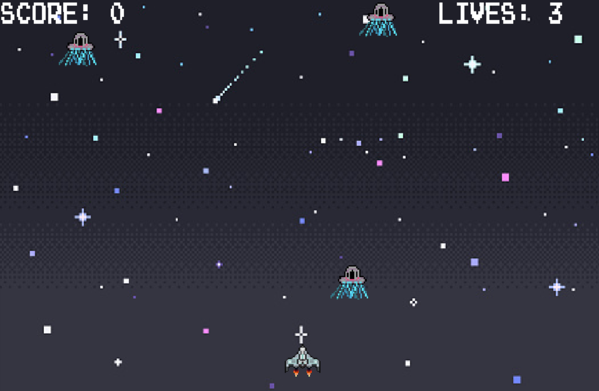
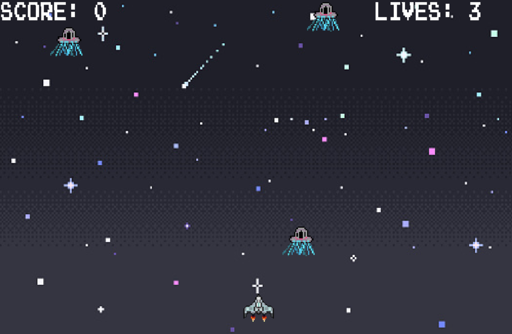
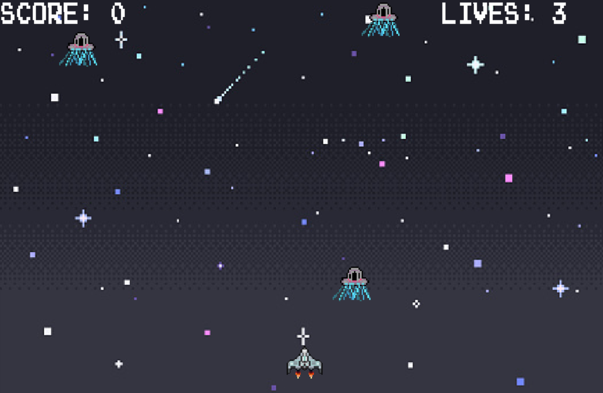
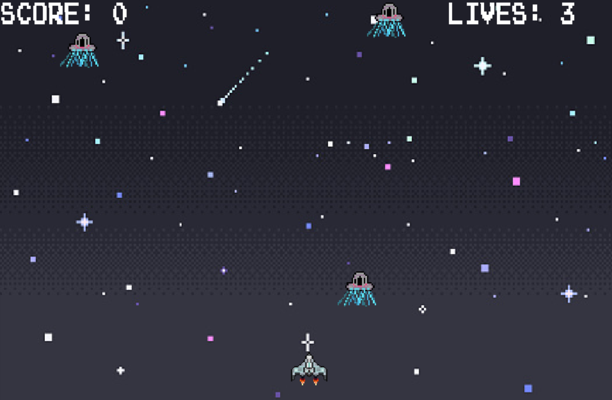

 
The goal of the game is to break all the bricks with the ball. You can toggle the paddle left and right to hit the ball using the A and D key or the left and right arrow keys. But be careful don’t let the ball fall through the bottom or you will lose a life! You have 3 lives for each level. Currently there are only 3 levels, but there may be more in the future!
Also you select a language before the game starts. Press S for Spanish and E for English. If you want to switch between languages during the game you can, just hit S or E again.
Looking back at my experience making the Breakout clone I realize there are so many things I wish I would have done differently, or if I had the time I would have done.
One of the initial things I wanted to do, but did not have enough time for was making the bricks all different colors, or at least have more than just blue bricks. In the level file I could have had different numbers signify different brick colors in the layout. I would have also liked to add in the option to mute the music or vary the sound level of it. I also think it would have been nice if different levels had different background songs playing. Also maybe with different levels the color of the paddle could have changed, or even its size. The ball’s color and size could have changed too. This would have added more variety and keep the game more visually appealing, so it would not grow stale.
Besides stylistic changes, in hindsight I realize I should have utilized my resource manager more. I was under the idea that the resource manager should only keep track of the image files in use, but I should have used it to load the different text textures and surfaces as well. I would also dedicate more time to smoothing out the physics in my game because there were times in the gameplay where I noticed brief glitches.
The following libraries are needed in order to run the game: SDL2, SDL_Mixer, SDL_ttf, and SDL_image.
Run the following in order to build the executable python build.py . After you can run the
following to play the game ./bin/game .